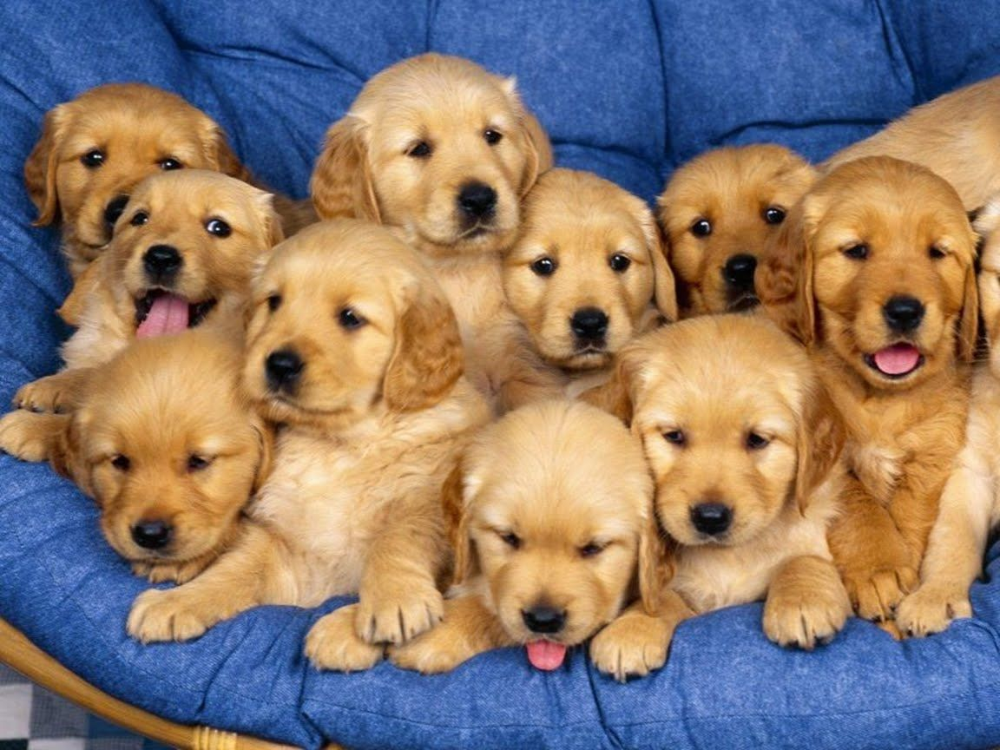
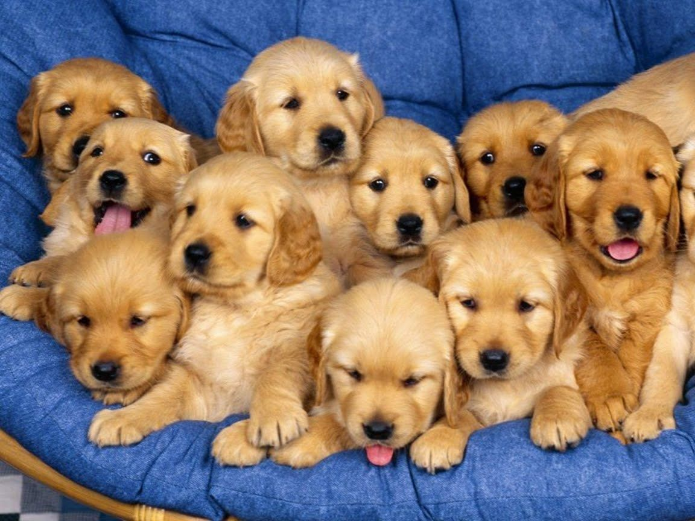

Si quieres ver más imágenes de perritos bonitos, da click en este enlace.
3 cosas que los perritos aman:
3 cosas que los perritos odian:
¿Tu perrito es cachorro o es adulto?
¿Qué tipo de personalidad tiene tu perrito?
 
